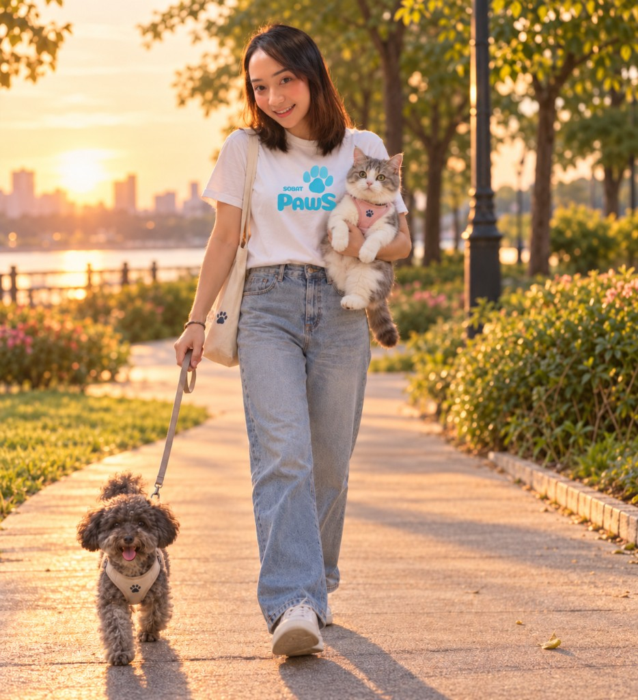

Naya Putri
0.8 km
Jaga anjing dan kucing di rumah, lengkap foto tiap sesi.
Pet Sitting4,912 ulasan
Tarif mulai dari
LayananRp 75.000
Paws Partner — by SobatPaws
Saat jadwalmu padat, mitra terverifikasi bisa menjaga di rumah, mengajak jalan, menitipkan seharian, melatih, mengantar, atau memotret anabul. Bandingkan yang terdekat, lalu lanjut ke pembayaran.



Saring menurut layanan, kota, anjing atau kucing, dan tanggal. Hasilnya langsung menyesuaikan daftar di bawah.
Geser peta atau pilih kota. Partner diurutkan dari yang paling dekat dengan lokasimu.
Jarak dari Jakarta Selatan
0.8 km
Jaga anjing dan kucing di rumah, lengkap foto tiap sesi.
Pet Sitting4,912 ulasan
Tarif mulai dari

1.2 km
Jalan pagi atau sore untuk anjing yang butuh keluar.
Dog Walking4,812 ulasan
Tarif mulai dari

0.4 km
Daycare seharian dengan makan, main, dan kabar jemput.
Daycare4,816 ulasan
Tarif mulai dari
2.1 km
Khusus kucing: makan, litter, tanpa dipaksa diangkat.
Pet Sitting4,95 ulasan
Tarif mulai dari
3.6 km
Penitipan anjing dengan main, istirahat, dan foto siang.
Daycare4,713 ulasan
Tarif mulai dari

1.8 km
Antar jemput ke klinik atau grooming, dengan kabar tiba.
Pet Taxi4,815 ulasan
Tarif mulai dari
4.2 km
Latihan dasar duduk, diam, dan jalan.
Training4,814 ulasan
Tarif mulai dari

2.7 km
Sesi foto anabul di rumah atau taman.
Photography58 ulasan
Tarif mulai dari

1 km
Jaga kucing di rumah, litter dan foto siang.
Pet Sitting4,819 ulasan
Tarif mulai dari
1 km
Jaga anjing atau kucing, lengkap catatan obat.
Pet Sitting4,922 ulasan
Tarif mulai dari

1 km
Jalan sore 40 menit di rute yang disepakati.
Dog Walking4,817 ulasan
Tarif mulai dari
1 km
Jalan pagi untuk anjing yang butuh keluar.
Dog Walking4,715 ulasan
Tarif mulai dari
1 km
Jalan santai untuk anjing senior.
Dog Walking4,924 ulasan
Tarif mulai dari
1 km
Daycare seharian dengan main dan kabar jemput.
Daycare4,820 ulasan
Tarif mulai dari
1 km
Penitipan kucing dengan ruang istirahat tenang.
Daycare4,916 ulasan
Tarif mulai dari
1 km
Latihan duduk, diam, dan jalan tanpa menarik.
Training4,823 ulasan
Tarif mulai dari
1 km
Latihan dasar untuk anjing yang baru di rumah.
Training4,918 ulasan
Tarif mulai dari
1 km
Latihan jalan di taman tanpa menarik tali.
Training4,712 ulasan
Tarif mulai dari
1 km
Antar jemput ke klinik dengan kabar saat tiba.
Pet Taxi4,814 ulasan
Tarif mulai dari
1 km
Jemput ke grooming dan antar pulang.
Pet Taxi4,613 ulasan
Tarif mulai dari
1 km
Antar kucing ke klinik dengan kandang tertutup.
Pet Taxi4,925 ulasan
Tarif mulai dari
1 km
Sesi foto 45 menit di taman atau rumah.
Photography5,019 ulasan
Tarif mulai dari
1 km
Foto anjing di rumah, hasil dipilih hari yang sama.
Photography4,816 ulasan
Tarif mulai dari
1 km
Sesi foto santai di taman.
Photography4,922 ulasan
Tarif mulai dari
Belum ada partner yang cocok dengan filter ini. Coba ubah layanan, lokasi, atau jenis hewan.
Menampilkan 1–16 dari 24 profil
Empat situasi yang paling sering muncul, dan cara Paws Partner menanggapinya.
Dinas, rapat, atau perjalanan bikin jam makan, litter, dan jalan sering terlewat.
Tulis jam kedatangan. Partner yang kosong di tanggal itu yang ditampilkan.
Rekomendasi dari grup chat belum tentu dekat, menerima kucing, atau paham anabul pemalu.
Filter lokasi, jenis hewan, dan layanan. Profil menampilkan apa yang dikerjakan.
Pergi seharian terasa berat kalau tidak ada kabar dari rumah.
Minta foto di awal, tengah, dan akhir sesi lewat catatan rencana.
Sitting di satu chat, antar ke klinik di chat lain, bayar di rekening yang berbeda.
Satu rencana, satu rekomendasi, lalu lanjut ke halaman bayar.
Harga “Mulai dari” adalah rata-rata tarif partner untuk layanan itu. Geser kartu untuk melihat isi tiap sesi.
Di rumahmu: makan, air, area bersih, dan foto. Obat hanya sesuai catatan.
Mulai dari
Jalan 30–45 menit di rute yang kamu setujui, untuk anjing saja.
Mulai dari
Titip seharian: main, istirahat, makan, dan kabar sebelum dijemput.
Mulai dari
Duduk, diam, dan jalan tanpa menarik tali, plus catatan lanjutan.
Mulai dari
Sekali jalan ke klinik, grooming, atau rumah, dengan kandang dan kabar tiba.
Mulai dari
Sesi 45 menit di rumah atau taman. Pilihan foto dikirim hari yang sama.
Mulai dari
Batas tiap sesi, supaya kamu tahu apa yang termasuk sebelum memilih.
Di rumahmu. Makan, air, bersihkan area, dan foto. Obat hanya jika jadwalnya tertulis.
Khusus anjing, 30–45 menit. Rute disepakati. Kamu dapat catatan energi dan satu foto.
Penitipan jam kerja. Ada main, istirahat, makan, dan kabar sebelum anabul dijemput.
Satu sesi dasar di rumah atau taman: duduk, diam, jalan tanpa menarik. Ada catatan lanjutan.
Antar atau jemput sekali jalan ke klinik, grooming, atau keluarga. Kandang dan kabar saat tiba.
Sekitar 45 menit, mengikuti tempo anabul. Pilihan foto dikirim di hari yang sama.
Dari rencana sampai bayar, tetap di SobatPaws.
Profil yang tampil sudah ditinjau. Lencana biru menandai status itu, lengkap ulasan bila sudah ada.
Rekomendasi diurutkan dari jarak ke Jakarta Selatan, Jakarta Pusat, Tangerang, Depok, atau Bekasi.
Partner yang libur di hari pilihanmu tidak didahulukan. Jika semua libur, tanggal buka berikutnya yang disebut.
Kartu menampilkan tarif mulai. Setelah rencana diisi, kisaran partner yang cocok ikut tampil.
Jam datang, obat, sifat pemalu, atau permintaan foto ikut ke pilihan partner dan halaman bayar.
Kalau rekomendasinya cocok, kamu pilih partner lalu mengisi pembayaran. Pratinjau ini tidak menarik dana.
Cara kerja
Isi rencana, terima rekomendasi terdekat, bandingkan tarif, lalu lanjut bayar.
Lokasi, tanggal, jenis hewan, dan pesan untuk partner.
Isi rencanaHingga tiga partner terdekat yang kosong di tanggal itu.
Lihat partnerJarak dan harga mulai tampil sebelum kamu memilih.
Lihat tarifPesanmu ikut ke halaman bayar bersama partner dan tarif.
Mulai sekarangTulis di mana sesi berlangsung, kapan, untuk anjing atau kucing, dan apa yang perlu dikerjakan. Layanan boleh dikosongkan kalau belum yakin. SobatPaws mengurutkan partner terdekat yang jadwalnya kosong, lalu menampilkan kisaran tarif.
Siapkan kota layanan, layanan utama, dan pengalaman merawat anjing atau kucing. Tim meninjau profil sebelum akun mitra aktif. Formulir ini pratinjau dan tidak mengirim data.
Contoh catatan setelah sesi. Nama berikut ilustrasi pratinjau, bukan ulasan yang masuk dari server.
Naya datang jam 8, mengirim foto makan siang, dan litter sudah bersih saat saya pulang.
Anjing saya dulu menarik tali. Setelah satu sesi dengan Dinda, jalan sore jadi lebih terkendali.
Dimas antar ke grooming dan kabar begitu sampai. Saya tidak perlu bolak-balik kantor.
Yang biasanya ditanyakan sebelum memilih partner atau mendaftar sebagai mitra.
Mitra SobatPaws untuk jaga di rumah, jalan-jalan anjing, penitipan harian, latihan dasar, antar jemput, dan sesi foto. Setiap profil menampilkan area, hewan yang diterima, dan tarif mulai.
Jam kedatangan, durasi, lokasi sesi di rumah atau taman, permintaan foto, sifat anabul, jadwal obat, serta tujuan antar seperti klinik atau grooming. Tombol di bawah kolom pesan menambahkan kalimat itu.
Dari lokasi, tanggal, dan jenis hewan. Partner yang menerima hewan itu dan kosong di tanggal pilihan diurutkan dari yang terdekat, lalu dari tarif. Layanan boleh dikosongkan; kata di pesan seperti “jaga”, “jalan”, atau “antar” ikut mengarahkan jenis layanan.
Pratinjau ini mencakup Jakarta Selatan, Jakarta Pusat, Tangerang, Depok, dan Bekasi. Partner di luar area pilihan tetap bisa muncul, dengan jarak yang lebih jauh.
Belum. Halaman bayar adalah pratinjau. Memilih transfer, QRIS, dompet digital, atau kartu hanya mencatat pilihan di peramban ini dan tidak mengirim data ke server.
Yang kosong di tanggal itu didahulukan. Jika tidak ada, daftar tetap menampilkan partner terdekat beserta tanggal buka berikutnya.
Tergantung profil. Ada partner yang menerima keduanya, ada yang khusus kucing atau khusus anjing. Pilih jenis hewan di rencana supaya yang tidak menerima tidak ikut disarankan.
Angka di kartu adalah tarif mulai per sesi. Label “Mulai dari” pada layanan populer adalah rata-rata tarif partner untuk layanan itu. Kisaran di rekomendasi mengikuti partner yang cocok dengan rencanamu.
Ubah tanggal di rencana lalu minta rekomendasi lagi. Di pratinjau ini belum ada penguncian jadwal, jadi pilihan baru langsung mengganti yang sebelumnya.
Isi nama, kota, layanan utama, dan pengalaman merawat. Tim meninjau sebelum akun mitra aktif. Pengiriman formulir di halaman ini hanya pratinjau.